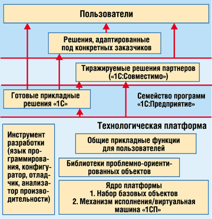
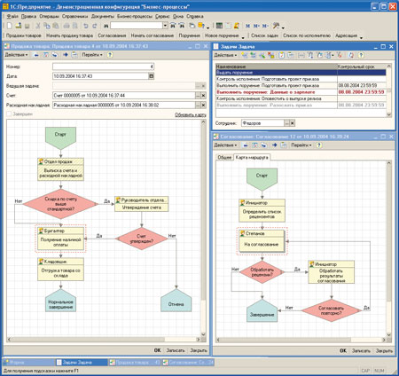
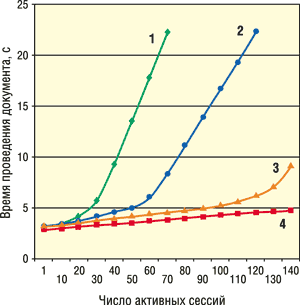
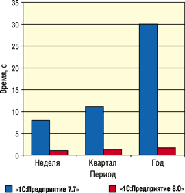
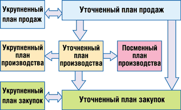
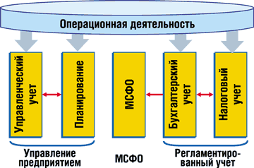

Андрей Колесов
Последние два года развитие бизнеса фирмы "1С" (Последние два года развитие бизнеса фирмы "1С" (http://www.1c.ru) в области экономического ПО проходит под знаком продвижения системы "1С:Предприятие 8.0", публичная бета-версия которой появилась в августе 2002 г., а первые прикладные решения для коммерческого применения - год спустя (см. "Платформа "1С" стала коммерческим продуктом", "BYTE/Россия" N 9'2003). Повышенный интерес к этому процессу со стороны рынка - заказчиков, партнеров, конкурентов - вызван во многом тем, что речь идет не только о смене архитектурных и технологических решений, но и о смещении позиционирования продуктов "1С" - с уровня малых структур в сегмент средних и даже крупных клиентов, а также о переходе от автоматизации бухгалтерского и оперативного учета к созданию комплексных систем управления предприятиями.
Структура системы
Развитие технологий и коррекция маркетинговой политики фирмы "1С" в последние годы сопровождается изменениями в терминологии, и без того пока не устоявшейся, что порой вносит определенную путаницу в умы заказчиков (особенно потенциальных). На самом же деле софтверная формула выглядит достаточно просто (подробнее структура показана на рис. 1):
Система "1СП8" = [технологическая] платформа + семейство прикладных решений
|  | Рис. 1. Структура системы ПО "1С:Предприятие 8.0".
|
В принципе эта формула была верна и для версии 7.x, но ранее "1С" предпочитала говорить лишь о прикладных решениях для пользователей. Объяснялся такой подход тем, что платформенная составляющая - это сугубо технологический компонент, с которым имеют дело лишь партнеры-внедренцы (и то не все). Такой вспомогательный характер платформы сохранился и сейчас, в версии 8.0 - в частности, она по-прежнему доступна и партнерам, и заказчикам лишь в составе готовых прикладных программ. Но роль платформы в общем комплексе ПО "1С" резко возросла, причем как для разработчиков и внедренцев, так и для пользователей. Выделим основные причины этого явления.
Основной задачей, стоявшей перед разработчиками "1С:Предприятие 8.0", было создание технологической базы для последующей разработки более масштабируемых, производительных и функциональных приложений. Однако, учитывая ответственность задач автоматизации, заказчикам сегодня уже недостаточно простых уверений "все в порядке", даже подтвержденных тестовыми исследованиями и пилотными проектами (все хорошо понимают относительность результатов тестирования). Именно потому растет интерес клиентов к архитектуре платформы, используемым технологиям и алгоритмам и т. д.
Как вспоминают сами разработчики "1С", выпуская в 1996 г. версию платформы 7.0, они никак не рассчитывали на то, что партнеры будут широко применять реализованные в ней средства программирования. Сейчас же средство разработки "1С:Конфигуратор" изначально создавалось как инструмент массового применения - и внедренцами, и заказчиками. При этом требовалось обеспечить возможность его быстрого освоения расширяющимся кругом пользователей и одновременно повысить эффективность профессиональной разработки сложных прикладных решений. Помимо разнообразных новшеств инструментария "1С", хотелось бы особо выделить появление механизма групповой распределенной разработки, который создавался в дополнение к первоначальным планам, по настоятельным пожеланиям франчайзи.
В версии 7 платформа состояла в основном из сугубо технологических компонентов, которые использовались лишь разработчиками. В версии системы 8.0 значительная часть пользовательского функционала (средства анализа данных, управление отчетами и т. п.) переносится с уровня прикладных решений на технологическую базу. Именно поэтому, если ранее заказчики интересовались лишь обновлениями для прикладных решений, то теперь им нужно следить и за модернизацией платформы.
Малые предприятия не останутся без вниманияГоворя о перспективах развития своего экономического ПО, фирма "1С" всегда подчеркивала, что повышение масштабируемости и функциональности ее продуктов совсем не означает снижения внимания к рынку малых предприятий. Просто естественная логика вывода на рынок новых технологий требует начинать с освоения новых сфер их применения, новых категорий заказчиков. Но когда же дойдет очередь до выпуска модернизированных версий приложений, таких, как "1С:Бухгалтерия", которая заставила сотни тысяч пользователей в нашей стране поверить, что "1С - это надолго и всерьез"? Ну, во-первых, полноценная функциональная и техническая поддержка всех продуктов на базе "1С:Предприятие 7.7" будет осуществляться еще многие годы. А во-вторых, "1С" уже начала разработку новых прикладных решений на базе "1С:Предприятие 8.0", в том числе ориентированных на небольшие компании.
|
Развитие платформы
В своих представлениях о возможностях технологий "1С" заказчики традиционно исходят из спектра предлагаемых на рынке готовых решений. Впрочем, многие из них и раньше понимали значение платформенных технологий, которые, например, позволяли проводить доработку и адаптацию систем под конкретные проекты. Сейчас, как мы уже отмечали, роль платформы в системе "1С:Предприятие 8.0" с точки зрения клиентов существенно возросла. И в этой связи хотелось бы подчеркнуть один очень важный момент.
Обычно платформенные технологии (например, операционные системы) воспринимаются как весьма консервативный слой ПО, развивающийся ступенчато, от версии к версии (при этом вопрос о том, насколько радикальны новшества, порой оказывается весьма спорным). Обратившись к знакомому всем примеру с ПО Microsoft последних лет (Windows, Office, Visual Studio), мы увидим, что возможности этих продуктов, представленные еще в их первых публичных бета-версиях, в целом остаются примерно на одном и том же уровне в течение всего жизненного цикла этих продуктов (3-4 года).
С платформой "1С:Предприятие 8.0" ситуация иная. Сначала мы были свидетелями динамичного развития новых технологических решений на этапе годичного бета-тестирования*. Но и с выходом рабочего варианта этот процесс не замедлился: за первый год было выпущено восемь обновленных релизов платформы, среди которых стоит особенно выделить варианты 8.0.5 и 8.0.7, появившиеся соответственно в феврале и июне нынешнего года.
* Платформа "1С:Предприятие 7.0", представленная на рынке в 1996 г., до появления системы нового поколения также пережила несколько качественных модернизаций - до версий 7.5 и 7.7. Но тогда эти изменения носили в основном технологический характер и были заметны только партнерам-внедренцам.
Обновления платформы можно условно разделить на два основных типа: технологические и прикладные. Первые предназначены для разработчиков и внедренцев; цель их - обеспечить возможность создавать более масштабируемые и функциональные приложения. К этому же типу можно отнести средства повышения производительности труда разработчиков. Второй тип обновлений связан с созданием функций, предназначенных непосредственно для пользователей (правда, они становятся реально доступными только после соответствующего обновления прикладных решений).
Ниже мы дадим краткий обзор наиболее значимых, на наш взгляд, новшеств, появившихся в составе платформы за последний год (полный их перечень можно найти в описаниях выпущенных релизов на сайте http://www.v8.1c.ru).
Технологические обновления
Базовые функции. В версии 7.x возможности прикладных решений определялись наборами предметно-ориентированных объектов: "бухгалтерский учет", "оперативный учет", "расчет". В "1С:Предприятие 8.0" наращивание аналогичных средств (такого разделения по компонентам в ней нет) шло поэтапно. В релизе 8.0.5 были реализованы в рабочем варианте механизмы бухгалтерского учета и сложных периодических расчетов. С этого момента система полностью перекрыла базовый функционал версии 7.7.
Средства разработки. Одной из главных задач, стоящих перед создателями платформы "1С:Предприятие 8.0", было повышение эффективности разработки прикладных решений. Среди последних новшеств нужно особо отметить средства поддержки групповой разработки, управления версиями и автоматизации сложных вариантов обновления прикладных решений. Если раньше разработку параллельно могли вести три-четыре человека, причем их взаимодействие строилось на основе инструкций, то теперь в группу без проблем могут входить два десятка программистов, синхронизация работы которых обеспечивается на технологическом уровне. Кроме всего прочего, это позволяет организовать работу распределенных команд.
Интеграция данных. Универсальный XML-механизм обмена данными предназначен как для создания территориально распределенных систем на базе "1С:Предприятие 8.0", так и для организации обмена данными с другими информационными системами. Применение универсальных форматов позволило снять ограничения, требующие идентичности структур различных баз данных. При этом могут быть реализованы многоуровневые топологические схемы взаимодействия узлов.
Управление распределенными базами данных. Технология управления такими БД обеспечивает регистрацию изменений в них, инфраструктуру сообщений и обмен информацией в формате XML. Для централизованного управления конфигурацией системы существуют визуальные средства. С их помощью выполняется не только обмен данными, но и перенос программной конфигурации и административной информации.
Способы поставки и поддержка программных продуктов. Реализованы два новых механизма взаимодействия разработчика прикладных решений и клиента. Первый механизм позволяет создавать отдельный дистрибутив для различных режимов работы ("Полный", "Ознакомительный" и т. д.). Второй обеспечивает автоматическую модификацию продукта, устанавливая только обновления, которые можно передавать на компакт-диске или загружать с Интернет-ресурса.
Создание Web-приложений. Новая версия Web-расширения, реализованная на базе технологий ASP.NET и ADO.NET, представляет собой отдельный продукт для создания Интернет-приложений на базе прикладных решений "1С:Предприятие 8.0". Пользовательский интерфейс создается с помощью стандартных элементов управления Web Forms и специализированных элементов управления самого Web-расширения.
Функциональные обновления
Формирование отчетов. В "1С:Предприятие 8.0" реализован качественно новый генератор отчетов; кроме того, в ней широко используется механизм сводной таблицы. Эти средства получили развитие в редакции 8.0.5, основной акцент при этом сделан на улучшение возможностей представления итоговых данных. Например, теперь можно создавать отчеты, размещая многоуровневые группировки в одной или нескольких колонках, применять различное оформление как для обычных, так и для кросс-отчетов. Вывод итогов в подвалах группировок позволяет готовить отчеты по форме, принятой в международной практике.
Представление данных. Интересной новинкой стали диаграммы Ганта - изображение интервалов на шкале времени. Они эффективны для графического представления того, как используются различные ресурсы во времени: отражения хода выполнения проектов, графиков отпусков, работы различного оборудования и т. п. Еще одно полезное нововведение - генерация выходных форм с помощью текстовых макетов. Разметка при этом выполняется традиционными графическими средствами и простыми текстовыми командами.
Бизнес-аналитика. Средства анализа данных дополнены инструментами прогнозирования и выявления скрытых закономерностей в больших объемах бизнес-информации. В них используют методы общей статистики, поиска ассоциативных правил, поиска последовательностей, построения деревьев решений и кластерного анализа.
Поддержка бизнес-процессов. Механизм ролевой маршрутизации обеспечивает автоматизацию бизнес-процессов с использованием условных и безусловных схем управления документами. Соответствие сотрудников выполняемым ролям обеспечивается с помощью многомерной ролевой адресации и может изменяться в процессе эксплуатации системы. Для описания бизнес-логики в маршрутной карте имеются визуальные инструменты (рис. 2).
|  |
| Рис. 2. Проектирование бизнес-процессов.
|
Хотелось бы отдельно отметить одно новшество, очень показательное в плане расширения сферы интересов фирмы "1С": появление полностью локализованных пользовательских интерфейсов (системные меню, диалоги, сообщения, встроенная справочная система) для английского и украинского языков.
Текущий (на начало сентября) релиз платформы "1С:Предприятие 8.0" представлен версией 8.0.8, хотя даже краткий обзор ее новшеств показывает, что ей смело можно было присвоить номер 8.1. Трудно сказать, будут ли разработчики платформы поддерживать взятый ими темп обновлений, но хотелось бы отметить тот факт, что многие новшества появились "по просьбам трудящихся", благодаря активной обратной связи с заказчиками и партнерами.
Масштабируемость и производительность
Одна из наиболее актуальных задач, стоящих перед новой версией платформы "1С:Предприятие", - повышение масштабируемости и производительности создаваемых на ее основе прикладных программ в условиях увеличения объема обрабатываемых данных, сложности выполняемых задач и роста числа подключенных к системе пользователей**.
**Широкий диапазон масштабируемости системы "1С:Предприятие 8.0" обеспечивается также за счет трех возможных вариантов работы - однопользовательского, файл-серверного (применяемого обычно для групп до 10 человек) и клиент-серверного с трехуровневой архитектурой (десятки и сотни одновременно работающих пользователей). Все эти варианты можно использовать без модификации прикладного решения, т. е. разработчик тиражных решений может выпускать одно и то же приложение для организаций самого разного масштаба.
В развитии системы в этом плане можно выделить два основных направления. Первое - увеличение производительности системы в рамках традиционного для версии 7.7 варианта развертывания на одном однопроцессорном сервере. И второе - улучшение распараллеливания процессов обработки для более эффективного применения многопроцессорных и многокомпьютерных систем, т. е. обеспечение масштабируемости за счет подключения дополнительных аппаратных средств.
Решая эти задачи, специалисты "1С" внесли целый ряд технологических новшеств:
- создали полноценную трехуровневую клиент-серверную архитектуру, в которой используется сервер приложений "1С:Предприятие";
- повысили уровень гранулярности блокировок при работе с базами данных (в частности, от блокировок на уровне таблицы, как в версии 7.x, перешли к блокировкам на уровне записи);
- изменили объектную модель с целью оптимизации процесса обработки сложных объектов;
- более эффективно перераспределили функции между оперативными и регламентными процедурами;
- модернизировали язык запросов к БД, что позволило перенести существенную часть нагрузки с клиентской части на сервер и снизить число обменов данными между клиентом и сервером;
- создали дополнительные низкоуровневые программные средства управления процессом обработки данных.
Первые исследования, проведенные еще на примере бета-версии "1С:Предприятие 8.0", показали ее заметные преимущества по сравнению с 7.7. Более детальное тестирование было выполнено в конце 2003 г. в условиях, приближенных к реальным, на примере двух типовых конфигураций: "1С:Предприятие 7.7. Торговля+Склад", редакция 9.2 и "1С:Предприятие 8.0. Управление торговлей", редакция 10 (полный вариант отчета о проведенном тестировании опубликован на сайте http://v8.1c.ru).
Первая группа тестов была посвящена оценке масштабируемости "1С:Предприятие 8.0" при увеличении интенсивности работы пользователей и росте объема обрабатываемых данных для клиент-серверного варианта системы. На файл-серверных конфигурациях формальные тестовые испытания не проводились, так как основные перспективы повышения производительности и масштабирования связывают с клиент-серверной архитектурой. Однако, по оценкам специалистов "1С", в выпущенных прошлой осенью продуктах на базе "1С:Предприятие 8.0" эффективность работы файл-серверного варианта также значительно выросла по сравнению с 7.7, особенно при решении комплексных задач, в которых задействованы слабо пересекающиеся данные.
Результаты тестов показали, что при использовании наиболее типичной сегодня для решений "1С" программно-аппаратной серверной платформы (одиночный однопроцессорный сервер) скорость работы с версией 8.0 при многопользовательском вводе документов повышается почти в два раза по сравнению с 7.7.
Но самое главное, что теперь за счет новых архитектурных решений в "1С:Предприятие 8.0" появилась возможность повысить производительность многопользовательских информационных систем за счет наращивания вычислительных мощностей без модификации самого программного решения - путем увеличения числа серверов, а также числа процессоров и объема памяти на отдельном компьютере.
На рис. 3 представлены результаты теста, отражающие изменение времени обработки документа при многопользовательском вводе для конфигураций с разным числом процессоров, в том числе и когда Microsoft SQL Server и сервер "1С:Предприятие 8.0" работают как на одном, так и на двух компьютерах (наиболее производительная конфигурация). Как видно, речь идет об увеличении производительности в разы и даже в десятки раз, более того - о качественном изменении характера зависимости при переходе к двухкомпьютерной конфигурации (экспоненциальная зависимость меняется на логарифмическую).
|  |
| Рис. 3. Скорость обработки документов при многопользовательском вводе и различной конфигурации серверов. 1-3: Microsoft SQL Server и сервер "1С:Предприятие 8.0" установлены на одном компьютере с числом процессоров 1, 2 и 4 соответственно; 4 - Microsoft SQL Server и сервер "1С:Предприятие 8.0" работают на разных компьютерах (соответственно четырех- и двухпроцессорном). |
Вторая группа тестов была посвящена исследованию производительности построения разнообразных отчетов. Приведенные на рис. 4 результаты одного из тестов (зависимость времени построения отчета от величины календарного периода) показывают значительное повышение скорости построения отчетов в новой версии. Видно также, что при увеличении анализируемого периода от недели до года время генерации отчета в случае "1С:Предприятие 7.7" возросло в 3,75 раза, тогда как в случае "1С:Предприятие 8.0" - всего в 1,36 раза.
|  | Рис. 4. Влияние величины календарного периода, за который проводился анализ, на время построения отчета.
|
В целом проведенное тестирование показало, что в клиент-серверной конфигурации "1С:Предприятие 8.0" по сравнению с версией 7.7 имеет ряд преимуществ. Во-первых, это более высокая производительность в типовых режимах функционирования: при многопользовательском вводе и проведении документов, а также при построении отчетов; кроме того, при увеличении интенсивности нагрузки и росте объема обрабатываемых данных производительность падает существенно меньше. Во-вторых, это высокая степень распараллеливания (пропускная способность) в конкурентных режимах работы, возможность наращивания производительности при раздельном запуске сервера баз данных и сервера "1С:Предприятия" на разных компьютерах. Высокая масштабируемость достигается в многопроцессорных конфигурациях. Кроме того, более эффективно используются возможности Microsoft SQL Server для выборки информации.
Разумеется, оценивая результаты любых эталонных тестов (тем более когда речь идет о сложных прикладных решениях), следует иметь в виду, что они лишь в определенной мере воспроизводят реальные условия эксплуатации конкретных систем. Такие результаты нужно воспринимать в первую очередь как базовые ориентиры. Впрочем, стоит сказать, что опыт реализации целого ряда конкретных проектов подтверждает правильность оценок, полученных на уровне тестирования.
Прикладные решения: новые горизонты
Однако платформа определяет лишь технологический потенциал прикладных решений, с которыми имеют дело собственно пользователи. Здесь нужно еще раз подчеркнуть, что все основные новшества "1С:Предприятие 8.0" нацелены на создание более масштабируемых и многофункциональных решений для рынка средних и крупных клиентов. И это находит отражение в стратегии разработки прикладных систем на базе новой платформы: если раньше формирование семейства приложений "1С" шло по принципу снизу вверх: сначала создание ПО для автоматизации отдельных подразделений предприятий (бухгалтерия, склад, кадры и т. д.), а затем их объединение в комплексное решение, то сейчас этот процесс идет сверху вниз.
Реализацию такого подхода можно было видеть уже на примере первого продукта, выпущенного на базе "1С:Предприятие 8.0" год назад, - "Управление торговлей" 10. Он вобрал хорошо зарекомендовавшую себя на практике функциональность типовой конфигурации "Торговля+Склад" редакции 9.2 системы программ "1С:Предприятие 7.7" и был дополнен целым рядом новых возможностей, позволяющих значительно расширить спектр задач автоматизации практически по всем участкам учета.
В конце 2003 г. вышла модернизированная редакция "Управление торговлей" 10.1, одним из главных новшеств в которой стала подсистема, реализующая функциональность CRM. На этом модуле нужно остановиться особо - он представляет собой достаточно автономное решение, которое хотя и не реализовано в виде самостоятельного продукта, но, очевидно, будет использоваться и в других приложениях "1С". Комплекс средств "1С:CRM" позволяет решать следующие основные задачи:
- хранение контактной информации о клиентах, автоматическое оповещение пользователей о предстоящих контактах с клиентом;
- помощь пользователям при оперативном принятии решений, касающихся взаимоотношений с клиентами;
- анализ отношений с клиентами, автоматическое деление клиентов на различные категории - АВС- и XYZ-анализ контрагентов;
- представление информации об истории сотрудничества с клиентами;
- планирование различных контактов менеджеров с клиентами, анализ работы менеджеров и оперативный контроль за их работой.
Однако, несмотря на хороший рыночный спрос на решение "Управление торговлей" (по количеству продаж оно еще в начале года обогнало "Торговлю+Склад"), ему, скорее, отводилась роль пилотного продукта, на примере которого разработчики "1С" и партнеры проверяли возможности технологических новшеств платформы (наверное, то же самое можно сказать и о втором приложении на базе "1С:Предприятие 8.0", появившемся осенью 2003 г., - "Управление персоналом").
Главные же события на фронте продвижения "1С:Предприятие 8.0" начнутся сейчас: в начале сентября на рынок была выпущена качественно новая для "1С" комплексная система автоматизации компаний сложной организационной структуры - "Управление производственным предприятием".
УПП - новое решение класса ERP
Конфигурация "Управление производственным предприятием" (УПП) представляет собой комплексное решение, охватывающее все основные контуры управления и учета на производственном предприятии. Ожидается, что наибольший эффект от его внедрения получат организации с численностью персонала от нескольких десятков до нескольких тысяч человек (в холдинговых и сетевых структурах), имеющие десятки и сотни автоматизированных рабочих мест.
При разработке УПП были учтены современные международные методики и подходы к управлению предприятием (MRP II, CRM, SCM, ERP, ERP II и т. д.), опыт успешной автоматизации производственных предприятий, накопленный фирмой "1С" и партнерским сообществом. В проектировании и разработке решения принимали участие специалисты компаний ИТРП (блок управления производством) и "1С-Рарус" (учет по международным стандартам). Консультационную поддержку по методическим вопросам реализации управленческого и финансового учета, а также по международным стандартам финансовой отчетности (МСФО) предоставил один из мировых лидеров в этой области - аудиторско-консалтинговая компания PricewaterhouseCoopers.
В УПП реализованы практически все имеющиеся сегодня технологические и функциональные возможности платформы "1С:Предприятие 8.0". Это решение позволяет организовать единую информационную среду для управления различными аспектами деятельности предприятия: производством, финансами, складом (запасами), продажами, закупками, отношениями с клиентами, персоналом (включая расчет заработной платы). Некоторые из этих функциональных модулей уже знакомы пользователям "1С" по ранее выпущенным прикладным решениям на платформах версий 7.7 и 8.0. Но и они в УПП подверглись существенному расширению. Например, в подсистеме "Управление продажами" появились специальные механизмы связи с планированием производства, управлением заказами потребителей, расчетом себестоимости и т. п.
Центральная роль в решении УПП отводится модулю управления производством (рис. 5). Эта подсистема предназначена для планирования производственных процессов и материальных потоков, отражения производственной деятельности предприятия и построения нормативной системы управления производством. Функциональность подсистемы может быть полезна сотрудникам планово-экономического отдела, производственных цехов, производственно-диспетчерского отдела и других производственных подразделений. Основные функции подсистемы определяются следующими возможностями:
- поддержка сценариев планирования как для стратегических целей производства, так и для учета возможных различий в условиях деятельности (отдельные версии планов также моделируются за счет создания отдельных сценариев);
- скользящее планирование, расширяющее горизонт планирования по мере наступления очередных плановых периодов;
- фиксация изменений распланированных данных в разрезах "сценарий-период";
- поддержка проектно-ориентированного производства;
- взаимодействие с подсистемой бюджетирования.
|  | Рис. 5. Система планирования производства.
|
Стоит также обратить внимание на качественно новую подсистему управления финансами (рис. 6). Теперь это не только "зеркало", в котором отражаются все показатели деятельности предприятия, инструмент учета фактических доходов и расходов, но и средство, позволяющее повысить оборачиваемость капитала, обеспечить эффективное управление инвестициями и движением денежных средств, четкий контроль над расходами и в результате существенно улучшить управляемость всего бизнеса и его конкурентоспособность.
|  | Рис. 6. Система управления финансами.
|
В подсистеме можно выделить следующие основные блоки: бюджетирование, управление денежными средствами, управление взаиморасчетами, бухгалтерский учет, налоговый учет, а также учет по международным стандартам.
Говоря о качественно новых возможностях прикладных решений на базе "1С:Предприятие 8.0", нужно отметить, что их внедрение предъявляет повышенные требования к квалификации партнеров-внедренцев. По мнению фирмы "1С", для выполнения подобных работ фирма-франчайзи должна иметь не только сертификат по продуктам "1С:Предприятие 8.0", но и быть участником проекта "1С:Консалтинг".
Кроме того, весной компания "1С" приступила к формированию сети специальных центров компетенции из наиболее успешных и опытных в автоматизации производственных предприятий партнеров. Важное направление развития таких центров - специализация по отраслям и создание отраслевых решений.